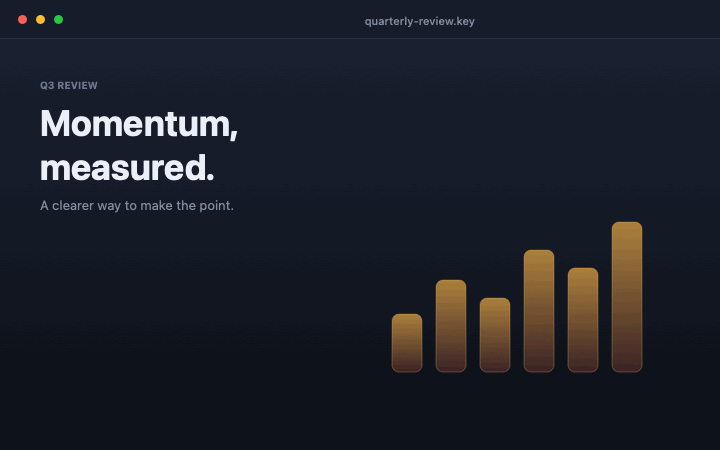

Take your presentation
to the next level.
Annotate your screen, highlight your cursor, and spotlight or zoom in on the details that matter — right over any app, without interrupting the work underneath.

Live demoAnnotate over anything you can see
A Mac app that makes your point
impossible to miss.
Annotate, highlight, spotlight, and zoom — all from a tiny menu-bar app that stays out of the way when you are done.
Draw over anything
Use pens, highlighters, text, arrows, and shapes to emphasize a point in real time. It works with any app or file type — slides, code, PDFs, videos, or a live demo.
- Pen, arrow, line, rectangle, ellipse, highlighter, text
- Solid redaction and a sequential counter for walkthroughs
- Shift-constrained shapes and 45° line snapping
- Auto-erase marks after a delay, or keep them on screen
Keep eyes on the pointer
A stylish ring follows your cursor so viewers can track exactly where you are. Clicks emit a subtle ripple, and the halo stays click-through — every action still reaches the app underneath.
- Custom color, size, and opacity
- Ring-only mode or ring with a center dot
- Click ripple feedback while presenting
- Works while drawing is off
Direct the room's attention
Dim everything except a clear aperture around your cursor, like a theatre spotlight. Move it across the screen while the apps underneath stay fully interactive.
- Adjustable aperture size and dim level
- No screen capture required
- Full-screen zoom and a cursor-following lens
- Both work across multiple displays
Sketch ideas on a clean canvas
Switch to an opaque board to explain a concept without the clutter behind it. Board drawings stay separate from your desktop marks, so switching modes never mixes them up.
- White or custom board color
- Separate canvas for board drawings
- Same tools, colors, and shortcuts
- Return to the desktop without losing your marks
Fast, light, and quiet.
A native AppKit app with no web runtime and no background services. It starts instantly and stays out of the way.
A tiny taste of LocalInk.
Pick a tool and draw on the slide. The real app works like this over every window on your Mac.
Make the point.
Keep the flow.
Draw anywhere on this slide. The buttons above mirror the real floating toolbar.
Toggle on. Make the point. Toggle off.
Toggle drawing
Press ⌃⌥D or use the menu-bar pencil. The desktop stays exactly where it is.
Draw and direct
Annotate over any app. Turn on the halo or spotlight to point without hiding the interface.
Get back to work
Toggle drawing off and every click, drag, and scroll goes back to the app underneath. Marks stay until you clear them.
Your screen never leaves your Mac.
LocalInk is built for people who present sensitive work. It runs fully offline with no account and no analytics. Drawing, halo, and spotlight never need screen-capture permission; only the optional zoom and export features do.
- No sign-up, no subscription, no telemetry
- No network code at runtime
- Images are saved only where you choose
- Open source under the MIT license
One app, many rooms.
Educators
Mark up slides and code while teaching, then hand control back without switching apps.
Presenters
Point out a control in a live demo and keep the audience on the exact step you mean.
Designers
Circle a detail in a review and annotate directly on the interface you are discussing.
Support
Walk someone through on-screen steps with clear marks and a visible cursor.
Creators
Record annotated tutorials with a clean, native overlay that stays out of the capture.
Developers
Explain a code path in a shared editor, spotlight a log line, and zoom into a small detail.
Download LocalInk
Free forever. No account. No strings.
Install
- Download and unzip
LocalInk.zip. - Drag LocalInk.app into Applications.
- Open it — LocalInk lives in the menu bar.
First launch
LocalInk is signed locally but not notarized with a paid Apple account. If macOS blocks the first launch, right-click (or Control-click) the app, choose Open, then Open again. You only do this once.
xattr -dr com.apple.quarantine /Applications/LocalInk.app
Prefer a specific version? See all releases on GitHub.
Good to know
Is LocalInk really free?
Yes. It is free and open source under the MIT license. There is no paid tier, account, or trial.
Does it collect any data?
No. There is no telemetry, no analytics, and no network access in the app. Your screen content never leaves your Mac.
Does it need Screen Recording permission?
Only the optional magnifier, full-screen zoom, and image export need it. Drawing, halo, and spotlight work without any capture permission.
Why does macOS warn me the first time?
The app is not notarized with a paid Apple Developer account. Right-click the app and choose Open once, or use the System Settings prompt to allow it.
Which Macs are supported?
macOS 13 or later, on both Apple Silicon and Intel Macs. The download is a universal build.
Can I use it while sharing my screen?
Yes. Sharing your entire display generally captures overlays correctly. Sharing a single window may not include the overlay, so verify the behavior in your meeting or recording app.